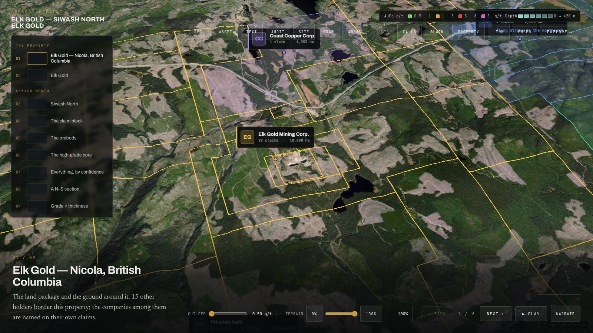
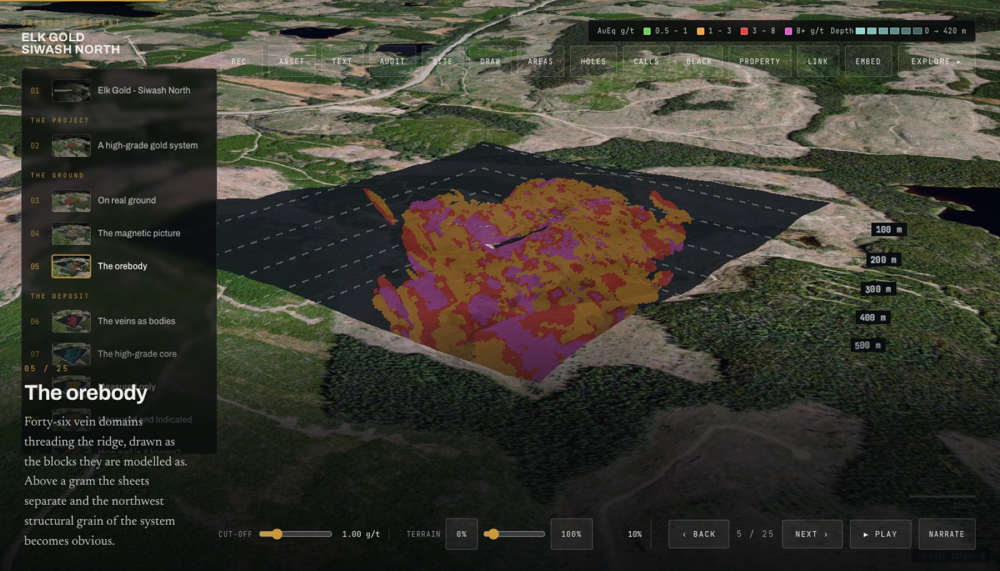
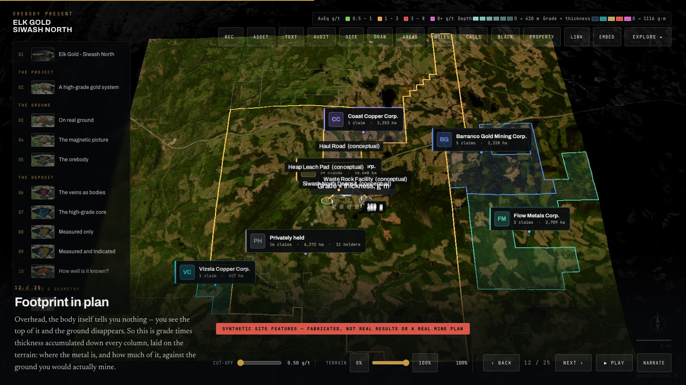
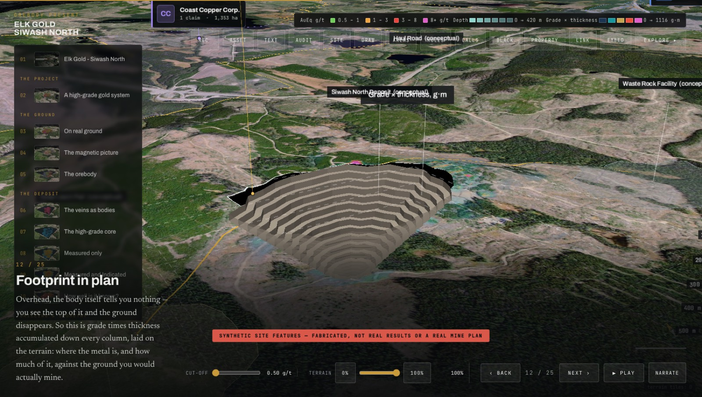
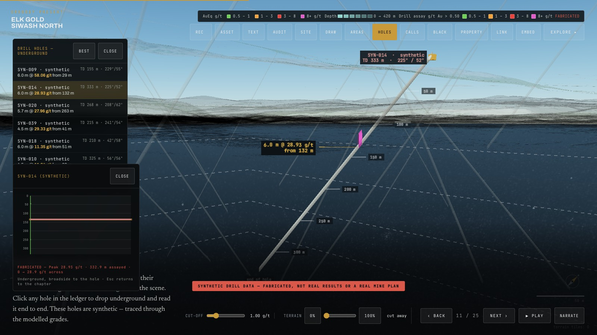

Bedrock turns asset estimates, project economics, and development milestones into clean, interactive visuals — so investors can explore the asset and follow the growth story from exploration to production, without wading through a technical report.

N 49.8412° / W 120.3487° RL 1420mOne model carries the whole story, from a first pitch to a production decision, updated as fast as the work itself moves.
Asset estimates and project economics render as visuals anyone can read in seconds — no geology background, no spreadsheet required.
Every visual traces back to the underlying estimate. Nothing is simplified past the point of accuracy — the story and the data are the same document.
The same model holds up on a conference stage, in a boardroom, or shared one-to-one with an analyst.
As drilling, engineering, and permitting move forward, update the model instead of rebuilding the deck from scratch.
Move between project economics and an interactive 3D view of the asset in the same conversation.

FIG. 01 — ASSET MODELThe board, your analysts, and your shareholders work from the same up-to-date view of the project, so a milestone update means the same thing in every room it's shown in.

FIG. 02 — LAND PACKAGE & NEIGHBOURSNot every investor can visit the site. Bedrock brings the project's geology and layout to a conference stage or a boardroom, at the scale and detail a static image can't carry.

FIG. 03 — SITE LAYOUTDrill core, assay results, and block models feed the same visuals investors see — nothing is redrawn or approximated for effect.

FIG. 04 — DOWNHOLE ASSAYSScreenshots show the Elk Gold demo project. Its block model is real; the drill holes and site features in it are synthetic, and Bedrock labels them on screen — which is the red banner you can see in the figures above.
"By making complex geology and data easy to grasp, Bedrock helps mining companies communicate their potential, build investor confidence, and stand out in a competitive market for capital."